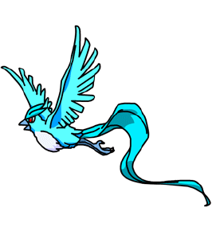

Articuno no es solo uno de los "pájaros legendarios" de Kanto; es la personificación de la elegancia gélida y la serenidad peligrosa. Con su plumaje de un azul translúcido que parece tallado en hielo y una cola larga que ondea como una aurora boreal, este Pokémon de tipo Hielo/Volador destaca por una majestuosidad que pocos rivales pueden igualar. Según la mitología de la franquicia, se dice que aparece ante los viajeros que se pierden en montañas nevadas para guiarlos, aunque su verdadera fuerza reside en su capacidad para congelar la humedad del aire y crear tormentas de nieve con solo batir sus alas. Es esa mezcla de fragilidad visual y poder devastador lo que lo convierte en un ícono atemporal: una criatura que habita en el aislamiento del frío absoluto, recordándonos que la belleza más pura suele ser también la más gélida.
